import pandas as pd
import matplotlib.pyplot as plt
import numpy as np
import geopandas as gpd
import warnings
warnings.simplefilter('ignore')COMM3180 Spring 2026 - Stories from Data
Instructor: Matt O’Donnell (mbod@asc.upenn.edu)
Shooting victims in Philadelphia

Exploring the dataset
Data is available from opendataphily.org
- https://www.opendataphilly.org/dataset/shooting-victims
- https://www.opendataphilly.org/dataset/shooting-victims
CSV version downloaded 03/16/26
data/shootings.csv
Related Data
- Philadelphia Police Districts
- https://www.opendataphilly.org/dataset/police-districts
- Philadelphia Police Districts
- Related articles
- https://www.theguardian.com/us-news/2021/sep/27/us-murder-rate-increase-2020
- https://6abc.com/philadelphia-murder-homicides-gun-violence-shooting/11050068/
Setup
1. Load the data into a data frame
shoot_df = pd.read_csv('data/shootings.csv') 2. Investigate the size of the data and eyeball some rows
- Key questions
- What does each row in the dataset represent?
- Which columns central to exploring stories in these data?
- What kinds of questions are possible given the data available (e.g. if age/race/ethnicity/other demographic information is available)?
shoot_df.shape(17516, 25)shoot_df.columnsIndex(['the_geom', 'the_geom_webmercator', 'objectid', 'year', 'dc_key',
'code', 'date_', 'time', 'race', 'sex', 'age', 'wound',
'officer_involved', 'offender_injured', 'offender_deceased', 'location',
'latino', 'point_x', 'point_y', 'dist', 'inside', 'outside', 'fatal',
'lat', 'lng'],
dtype='str')Some of these columns are not mention in the metadata entry that lists 20 columns
Looks like there could be duplication (e.g.
point_xandlng,point_yandlatetc) and extra fields added for a specific dashboard/application use.
shoot_df.head()| the_geom | the_geom_webmercator | objectid | year | dc_key | code | date_ | time | race | sex | ... | location | latino | point_x | point_y | dist | inside | outside | fatal | lat | lng | |
|---|---|---|---|---|---|---|---|---|---|---|---|---|---|---|---|---|---|---|---|---|---|
| 0 | 0101000020E61000003CDB07ACFEC752C08841D6A92B03... | 0101000020110F0000BA1043EEDCE65FC1DE02479C6993... | 1 | 2021 | 2.021250e+11 | 100.0 | 2021-04-18 | 06:16:00 | W | F | ... | 4800 BLOCK N HOWARD ST | 0.0 | -75.124919 | 40.024770 | 25.0 | 1.0 | 0.0 | 1.0 | 40.024770 | -75.124919 |
| 1 | 0101000020E61000008CD8ADB931CA52C0C8B91833E402... | 0101000020110F000053465B5599EA5FC1B9C82C5A1A93... | 2 | 2021 | 2.021390e+11 | 100.0 | 2021-04-07 | 14:43:00 | B | M | ... | 2000 BLOCK WINDRIM AVE | 0.0 | -75.159285 | 40.022589 | 39.0 | 0.0 | 1.0 | 1.0 | 40.022589 | -75.159285 |
| 2 | 0101000020E61000008CD8ADB931CA52C0C8B91833E402... | 0101000020110F000053465B5599EA5FC1B9C82C5A1A93... | 3 | 2021 | 2.021390e+11 | 100.0 | 2021-04-07 | 14:43:00 | B | M | ... | 2000 BLOCK WINDRIM AVE | 0.0 | -75.159285 | 40.022589 | 39.0 | 0.0 | 1.0 | 0.0 | 40.022589 | -75.159285 |
| 3 | 0101000020E6100000DC861B6728C852C0800655890300... | 0101000020110F000063028BD023E75FC13C7C9D7DE98F... | 4 | 2023 | 2.023250e+11 | 100.0 | 2023-02-16 | 04:55:00 | W | M | ... | 100 BLOCK E WESTMORLAND ST | 1.0 | -75.127466 | 40.000108 | 25.0 | 0.0 | 1.0 | 1.0 | 40.000108 | -75.127466 |
| 4 | 0101000020E6100000DC861B6728C852C0800655890300... | 0101000020110F000063028BD023E75FC13C7C9D7DE98F... | 5 | 2023 | 2.023390e+11 | 400.0 | 2023-02-16 | 04:55:00 | W | F | ... | 100 BLOCK E WESTMORLAND ST | 1.0 | -75.127466 | 40.000108 | 25.0 | 0.0 | 1.0 | 0.0 | 40.000108 | -75.127466 |
5 rows × 25 columns
looks like each row is a shooting incident
looks like geo location duplicate across four columns
lng=point_xlat=point_y
question: do more shootings occur inside or outside?
who do demographic columns refer to:
- e.g. age, sex, race - offender or victim?
What are
the_geomandthe_geom_webmercatorcolumns?Do we need them?
shoot_df['the_geom_webmercator']0 0101000020110F0000BA1043EEDCE65FC1DE02479C6993...
1 0101000020110F000053465B5599EA5FC1B9C82C5A1A93...
2 0101000020110F000053465B5599EA5FC1B9C82C5A1A93...
3 0101000020110F000063028BD023E75FC13C7C9D7DE98F...
4 0101000020110F000063028BD023E75FC13C7C9D7DE98F...
...
17511 0101000020110F0000FA682ADFB2F35FC18B57816DD68B...
17512 0101000020110F0000D4398B5B7AE95FC16F2E15EB1D8E...
17513 0101000020110F00004CC0A1F932EA5FC14D9A3D8FD997...
17514 0101000020110F0000DD76C41E9BEA5FC1E919F9484184...
17515 0101000020110F0000DC76D4790EEB5FC129181FF4CC87...
Name: the_geom_webmercator, Length: 17516, dtype: strshoot_df['the_geom'].head(10)0 0101000020E61000003CDB07ACFEC752C08841D6A92B03...
1 0101000020E61000008CD8ADB931CA52C0C8B91833E402...
2 0101000020E61000008CD8ADB931CA52C0C8B91833E402...
3 0101000020E6100000DC861B6728C852C0800655890300...
4 0101000020E6100000DC861B6728C852C0800655890300...
5 0101000020E6100000189FB71BFEC452C05038C7950705...
6 0101000020E6100000189FB71BFEC452C05038C7950705...
7 0101000020E6100000189FB71BFEC452C05038C7950705...
8 0101000020E6100000A47AF59B50CD52C0582B874199FC...
9 0101000020E6100000B40380F31ACA52C088BC94106502...
Name: the_geom, dtype: strLooks like some encoded information for a specific application (probably related to geodata)
We will ignore for now
3. Look at columns and kinds and range of data captured in dataset
shoot_df.columnsIndex(['the_geom', 'the_geom_webmercator', 'objectid', 'year', 'dc_key',
'code', 'date_', 'time', 'race', 'sex', 'age', 'wound',
'officer_involved', 'offender_injured', 'offender_deceased', 'location',
'latino', 'point_x', 'point_y', 'dist', 'inside', 'outside', 'fatal',
'lat', 'lng'],
dtype='str')- what is
dist? - distance? from what? - probably district- checking the metadata confirms that it is POLICE DISTRICT
# how many values in the dist column?
shoot_df['dist'].nunique()22# what are the distinct values?
shoot_df['dist'].unique()array([25., 39., 2., 16., 22., 15., 24., 19., 18., 26., 35., 14., 12.,
6., 9., 17., 1., 3., 5., 7., 8., nan, 77.])# how are they distributed?
shoot_df['dist'].value_counts()dist
25.0 2111
22.0 1991
24.0 1716
35.0 1381
39.0 1314
15.0 1284
12.0 1269
19.0 1225
14.0 919
18.0 841
16.0 823
26.0 579
17.0 464
2.0 458
3.0 338
1.0 253
6.0 189
9.0 149
8.0 118
7.0 49
5.0 40
77.0 3
Name: count, dtype: int64- We will come back and look at the file
data/Boundaries_District.csvin more detail. But if we load it and take a quick look:
districts_df = pd.read_csv('data/Boundaries_District.csv')districts_df.shape(22, 14)districts_df.head()| OBJECTID | AREA | PERIMETER | DISTRICT_ | DISTRICT_ID | DIST_NUM | SUM_AREA | DIST_NUMC | LOCATION | PHONE | DIV_CODE | AREA_SQMI | Shape__Area | Shape__Length | |
|---|---|---|---|---|---|---|---|---|---|---|---|---|---|---|
| 0 | 343 | NaN | 69282.588463 | 16 | NaN | 16 | NaN | 16 | 39th St. & Lancaster Ave. | 686-3160 | SWPD | 1.216700e+08 | 1.927226e+07 | 27575.079183 |
| 1 | 344 | NaN | 33150.154961 | 17 | NaN | 17 | NaN | 17 | 20th St. & Federal St. | 686-3170 | SPD | 5.786368e+07 | 9.154950e+06 | 13179.953350 |
| 2 | 345 | NaN | 54403.930038 | 18 | NaN | 18 | NaN | 18 | 55th St. & Pine St. | 686-3180 | SWPD | 9.881929e+07 | 1.564117e+07 | 21629.610687 |
| 3 | 346 | NaN | 51597.051603 | 35 | NaN | 35 | NaN | 35 | N. Broad St. & Champlost St. | 686-3350 | NWPD | 1.544309e+08 | 2.450685e+07 | 20554.869138 |
| 4 | 347 | NaN | 58075.014444 | 39 | NaN | 39 | NaN | 39 | 22nd St. & Hunting Park Ave. | 686-3390 | NWPD | 1.578976e+08 | 2.503787e+07 | 23123.580262 |
districts_df['DIST_NUM'].nunique()22districts_df['DIST_NUM'].unique()array([16, 17, 18, 35, 39, 1, 2, 3, 19, 22, 24, 25, 26, 15, 77, 5, 6,
7, 8, 9, 12, 14])- Seems like the
distvalues in theshoot_dfand those in thedistricts_dfalign (although one more?)
Returning to columns in shoot_df
- The
racecolumn
shoot_df['race'].value_counts()race
B 14198
W 3011
A 121
U 11
O 1
Name: count, dtype: int64- Values:
- B = black
- W = white
- A = Asian(?)
- U=?unknown/unidentified
- I = indigenous?
- Checking the entry from the metadata field table
| Field Name | Alias | Description | Type |
|---|---|---|---|
| RACE | Race | The race of the individual shot (Asian, Black, White, American Indian, Other) | Text |
NOTE: We should map these single letter abbreviations to readable labels
Probably doesn’t help us understand the distribution beyond what we see from using
.value_counts()but we could do some quick visualization
shoot_df['race'].value_counts().plot(kind='bar')
plt.show()
WARNING DON’T DO THIS!!!!
- For illustration purposes of how horrible a pie chart is for understanding data take a look at this
shoot_df['race'].value_counts().plot(kind='pie')
plt.show()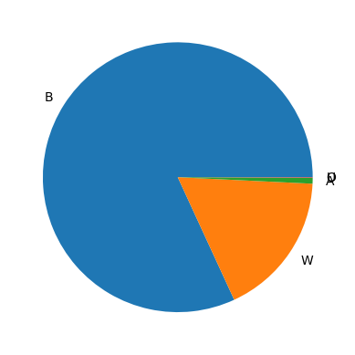
pandaswill let you create a pie-chart… but it is strongly discouraged as most data visualization sources will tell you how poorly they communicate proportions. Best to use a bar chart. Enough said!The
yearcolumn
shoot_df['year'].value_counts()year
2021 2342
2022 2269
2020 2259
2023 1672
2019 1473
2018 1447
2016 1342
2015 1294
2017 1265
2024 1112
2025 954
2026 87
Name: count, dtype: int64The
date_columnLooking at a random sample of 20 rows:
shoot_df['date_'].sample(20)16036 2019-08-29
2788 2017-01-14
17179 2016-01-03
9242 2021-04-14
1321 2021-11-17
2457 2023-06-21
13620 2023-03-25
7938 2016-08-25
2737 2016-10-27
1522 2020-03-11
3955 2023-06-26
11606 2021-01-09
6620 2020-08-01
2088 2023-12-29
719 2021-03-12
8871 2025-09-27
16879 2021-11-16
8126 2017-08-30
16059 2016-08-07
17243 2021-09-04
Name: date_, dtype: strdate_has aYYYY-MM-DDformatThe
agecolumnLooks numeric for years old, so can use `.describe() to look at min, max, mean etc.
shoot_df['age'].describe()count 17215.000000
mean 29.413767
std 11.385377
min 0.000000
25% 21.000000
50% 27.000000
75% 35.000000
max 117.000000
Name: age, dtype: float64- We could also use
.value_counts()as it is a fixed set (0-117 years old)
shoot_df['age'].value_counts()age
21.0 824
20.0 808
23.0 780
22.0 773
19.0 758
...
88.0 1
81.0 1
84.0 1
117.0 1
87.0 1
Name: count, Length: 89, dtype: int64- And perhaps use a plot of this distribution
shoot_df['age'].value_counts().plot(kind='bar', figsize=(16,4))
plt.show()
20-25 year olds most frequent
But this is not that helpful to observe patterns.
Below we will use a histogram instead
4. Identify the dimensions that could be used for grouping and summarizing
- Look at the types of values in the columns:
- categorical - groups, kinds, outcomes, etc.
sexrace- ?latino col is separate- type of shooting
fatallocation- inside or not
- officer involved
- wound type
- date
yeardate_y-m-d
- location
- geolocation columns (
point_x,lngetc) dist- polic district
- geolocation columns (
- continuous counts, measurements
age- but need to add grouping
- categorical - groups, kinds, outcomes, etc.
5. Summarize key columns
Use Pandas functions like
.value_counts()and.describe()and.count()to look at the distribution of valuesFor continuous values you can use
.plot()and.hist()Also try
.plot(kind=bar)on the result of counting values.
shoot_df['age'].plot(kind='hist', bins=50)
plt.show()
shoot_df['age'].plot(kind='density')
plt.show()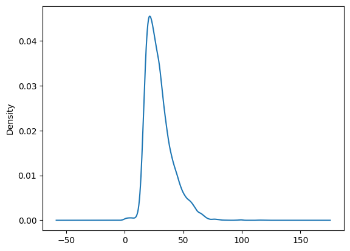
shoot_df['age'].mean()np.float64(29.41376706360732)shoot_df['age'].median()np.float64(27.0)shoot_df['age'].describe()count 17215.000000
mean 29.413767
std 11.385377
min 0.000000
25% 21.000000
50% 27.000000
75% 35.000000
max 117.000000
Name: age, dtype: float64shoot_df['race'].value_counts().plot(kind='bar')
plt.show()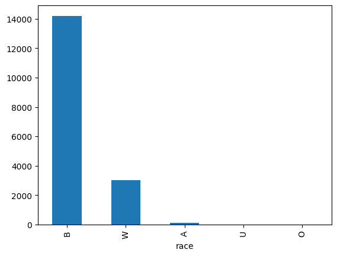
shoot_df['inside'].value_counts()inside
0.0 16219
1.0 1123
Name: count, dtype: int64shoot_df['outside'].value_counts()outside
1.0 16219
0.0 1123
Name: count, dtype: int64race_mapping = {
'B': 'BLACK',
'W': 'WHITE',
'A': 'ASIAN',
'I': 'INDIGENOUS',
'U': 'UNIDENTIFIED/OTHER'
}Remapping values with .map() function
shoot_df['race'].map(race_mapping).head(10)0 WHITE
1 BLACK
2 BLACK
3 WHITE
4 WHITE
5 BLACK
6 BLACK
7 WHITE
8 BLACK
9 BLACK
Name: race, dtype: strrace_mapping['B']'BLACK'shoot_df['race'].head(10)0 W
1 B
2 B
3 W
4 W
5 B
6 B
7 W
8 B
9 B
Name: race, dtype: strshoot_df['race_long']=shoot_df['race'].map(race_mapping)shoot_df.shape(17516, 26)shoot_df[['race','race_long']]| race | race_long | |
|---|---|---|
| 0 | W | WHITE |
| 1 | B | BLACK |
| 2 | B | BLACK |
| 3 | W | WHITE |
| 4 | W | WHITE |
| ... | ... | ... |
| 17511 | NaN | NaN |
| 17512 | NaN | NaN |
| 17513 | NaN | NaN |
| 17514 | NaN | NaN |
| 17515 | NaN | NaN |
17516 rows × 2 columns
shoot_df['latino'].value_counts()latino
0.0 15203
1.0 2139
Name: count, dtype: int64latino_mapping = {
0 : 'NON-LATINO',
1 : 'LATINO'
}shoot_df['latino_long']=shoot_df['latino'].map(latino_mapping)shoot_df.shape(17516, 27)shoot_df['ethnicity']=shoot_df['race_long'] + ' ' + shoot_df['latino_long']shoot_df['ethnicity'].head(20)0 WHITE NON-LATINO
1 BLACK NON-LATINO
2 BLACK NON-LATINO
3 WHITE LATINO
4 WHITE LATINO
5 BLACK NON-LATINO
6 BLACK NON-LATINO
7 WHITE LATINO
8 BLACK NON-LATINO
9 BLACK NON-LATINO
10 BLACK NON-LATINO
11 BLACK NON-LATINO
12 BLACK NON-LATINO
13 BLACK NON-LATINO
14 WHITE LATINO
15 BLACK NON-LATINO
16 WHITE LATINO
17 WHITE NON-LATINO
18 BLACK NON-LATINO
19 WHITE NON-LATINO
Name: ethnicity, dtype: strshoot_df['ethnicity'].value_counts().plot(kind='bar')
plt.show()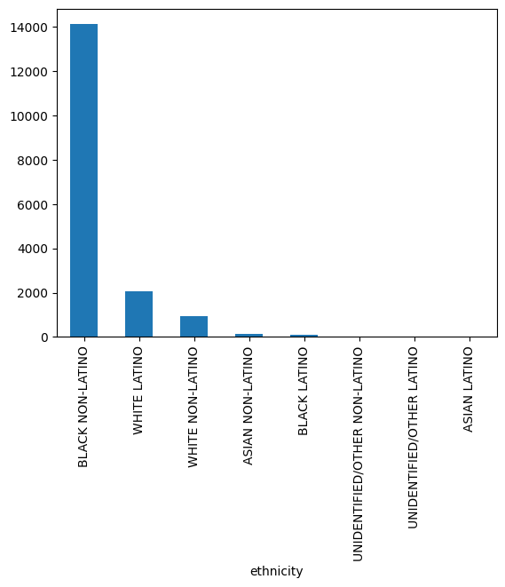
shoot_df.groupby(['race_long', 'latino_long']).size().unstack().plot(kind='bar', stacked=False)
plt.show()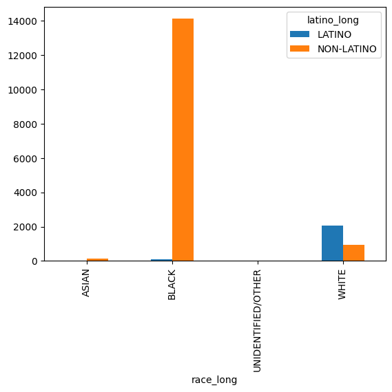
shoot_df.groupby(['race_long', 'latino_long']).size()race_long latino_long
ASIAN LATINO 1
NON-LATINO 120
BLACK LATINO 80
NON-LATINO 14118
UNIDENTIFIED/OTHER LATINO 3
NON-LATINO 8
WHITE LATINO 2055
NON-LATINO 956
dtype: int64shoot_df.count()the_geom 17516
the_geom_webmercator 17490
objectid 17516
year 17516
dc_key 17516
code 17328
date_ 17516
time 17342
race 17342
sex 17490
age 17215
wound 17334
officer_involved 17516
offender_injured 17515
offender_deceased 17516
location 17516
latino 17342
point_x 17490
point_y 17490
dist 17514
inside 17342
outside 17342
fatal 17342
lat 17490
lng 17490
race_long 17341
latino_long 17342
ethnicity 17341
dtype: int64- not much missing data - come back and check for how missing values are recorded
shoot_df.groupby('sex')['race_long'].value_counts()sex race_long
F BLACK 1430
WHITE 428
ASIAN 22
M BLACK 12768
WHITE 2583
ASIAN 99
UNIDENTIFIED/OTHER 11
Name: count, dtype: int64shoot_df[['inside','outside']].corr()| inside | outside | |
|---|---|---|
| inside | 1.0 | -1.0 |
| outside | -1.0 | 1.0 |
shoot_df.groupby('year')['fatal'].value_counts(normalize=True)year fatal
2015 0.0 0.816680
1.0 0.183320
2016 0.0 0.801365
1.0 0.198635
2017 0.0 0.790735
1.0 0.209265
2018 0.0 0.792334
1.0 0.207666
2019 0.0 0.786885
1.0 0.213115
2020 0.0 0.799911
1.0 0.200089
2021 0.0 0.782441
1.0 0.217559
2022 0.0 0.789264
1.0 0.210736
2023 0.0 0.773960
1.0 0.226040
2024 0.0 0.789474
1.0 0.210526
2025 0.0 0.779553
1.0 0.220447
2026 0.0 0.816092
1.0 0.183908
Name: proportion, dtype: float64bins=[0,9,19,29,39,49,59,69,79,100]
labels=["0-9", "10-19", "20-29", "30-39", "40-49", "50-59", "60-69","70-79", "80+"]shoot_df['age_group']=pd.cut(shoot_df['age'], bins=bins, labels=labels)shoot_df[['age', 'age_group']]| age | age_group | |
|---|---|---|
| 0 | 29.0 | 20-29 |
| 1 | 22.0 | 20-29 |
| 2 | 22.0 | 20-29 |
| 3 | 34.0 | 30-39 |
| 4 | 33.0 | 30-39 |
| ... | ... | ... |
| 17511 | NaN | NaN |
| 17512 | NaN | NaN |
| 17513 | NaN | NaN |
| 17514 | NaN | NaN |
| 17515 | NaN | NaN |
17516 rows × 2 columns
shoot_df['age_group'].value_counts()age_group
20-29 7248
30-39 4073
10-19 2895
40-49 1778
50-59 791
60-69 278
0-9 76
70-79 44
80+ 19
Name: count, dtype: int64shoot_df[shoot_df['age_group']=='80+']| the_geom | the_geom_webmercator | objectid | year | dc_key | code | date_ | time | race | sex | ... | dist | inside | outside | fatal | lat | lng | race_long | latino_long | ethnicity | age_group | |
|---|---|---|---|---|---|---|---|---|---|---|---|---|---|---|---|---|---|---|---|---|---|
| 646 | 0101000020E6100000182702F80ECC52C058BEEDCA6DF7... | 0101000020110F0000A2C6BFFAC3ED5FC1DD40D7146686... | 642 | 2023 | 2.023170e+11 | 100.0 | 2023-09-04 | 09:05:00 | W | M | ... | 17.0 | 0.0 | 1.0 | 1.0 | 39.933038 | -75.188414 | WHITE | NON-LATINO | WHITE NON-LATINO | 80+ |
| 1069 | 0101000020E6100000B09ED44386C952C080856A226A07... | 0101000020110F0000FFE13C1776E95FC16D4B75E41E98... | 1058 | 2019 | 2.019351e+11 | 300.0 | 2019-08-17 | 00:38:00 | B | M | ... | 35.0 | 1.0 | 0.0 | 0.0 | 40.057926 | -75.148820 | BLACK | NON-LATINO | BLACK NON-LATINO | 80+ |
| 1608 | 0101000020E6100000A830924A0CCF52C0A8EB0D540CF9... | 0101000020110F00004AEBEFF4D7F25FC1C64230433188... | 1592 | 2015 | 2.015121e+11 | 400.0 | 2015-09-26 | 23:30:00 | B | M | ... | 12.0 | 0.0 | 1.0 | 0.0 | 39.945689 | -75.235125 | BLACK | NON-LATINO | BLACK NON-LATINO | 80+ |
| 1980 | 0101000020E6100000C453F45F5ECF52C0D01B79831CFB... | 0101000020110F00007589486263F35FC19D7EC6747A8A... | 1958 | 2016 | 2.016180e+11 | 400.0 | 2016-04-17 | 08:50:00 | W | M | ... | 18.0 | 0.0 | 1.0 | 0.0 | 39.961808 | -75.240135 | WHITE | NON-LATINO | WHITE NON-LATINO | 80+ |
| 3629 | 0101000020E61000000C4C8A69E8C952C0F8E593821F08... | 0101000020110F000002B9C8CD1CEA5FC1674DD328E898... | 3593 | 2020 | 2.020140e+11 | 100.0 | 2020-02-10 | 20:03:00 | B | M | ... | 14.0 | 1.0 | 0.0 | 1.0 | 40.063462 | -75.154810 | BLACK | NON-LATINO | BLACK NON-LATINO | 80+ |
| 5570 | 0101000020E61000008C5BB8EB66CA52C0E08DED9E84FC... | 0101000020110F0000E23AF8B0F3EA5FC14A5D8582098C... | 5519 | 2015 | 2.015221e+11 | 100.0 | 2015-06-23 | 03:26:00 | B | M | ... | 22.0 | 0.0 | 1.0 | 1.0 | 39.972797 | -75.162532 | BLACK | NON-LATINO | BLACK NON-LATINO | 80+ |
| 7081 | 0101000020E610000024CCFFD44DCA52C030F07BBF44F7... | 0101000020110F000089F25413C9EA5FC109D6ED9E3886... | 7019 | 2020 | 2.020030e+11 | 400.0 | 2020-05-29 | 06:30:00 | W | M | ... | 3.0 | 0.0 | 1.0 | 0.0 | 39.931786 | -75.161000 | WHITE | NON-LATINO | WHITE NON-LATINO | 80+ |
| 7850 | 0101000020E6100000288039E557CA52C0E022560AF7FE... | 0101000020110F000093564F2BDAEA5FC13BEDC1D4BF8E... | 7780 | 2020 | 2.020220e+11 | 400.0 | 2020-05-18 | 15:51:00 | B | M | ... | 22.0 | 0.0 | 1.0 | 0.0 | 39.991914 | -75.161615 | BLACK | NON-LATINO | BLACK NON-LATINO | 80+ |
| 9415 | 0101000020E6100000F06756EE99CE52C030BCB962C0F9... | 0101000020110F000038FA4EB415F25FC17A4604BDF888... | 9327 | 2018 | 2.018180e+11 | 400.0 | 2018-07-12 | 03:15:00 | B | M | ... | 18.0 | 0.0 | 1.0 | 0.0 | 39.951184 | -75.228145 | BLACK | NON-LATINO | BLACK NON-LATINO | 80+ |
| 11014 | 0101000020E61000006401D39C8ECF52C0E071143766FB... | 0101000020110F000090D71452B5F35FC1F32D9F1FCC8A... | 10916 | 2024 | 2.024190e+11 | 100.0 | 2024-03-05 | 13:36:00 | B | M | ... | 19.0 | 0.0 | 1.0 | 1.0 | 39.964057 | -75.243079 | BLACK | NON-LATINO | BLACK NON-LATINO | 80+ |
| 11144 | 0101000020E6100000D8CCC8F0DDC952C0A81DF74D64F7... | 0101000020110F0000262140040BEA5FC1D97188925B86... | 11045 | 2016 | 2.016031e+11 | 100.0 | 2016-12-24 | 08:53:00 | W | F | ... | 3.0 | 1.0 | 0.0 | 1.0 | 39.932749 | -75.154171 | WHITE | NON-LATINO | WHITE NON-LATINO | 80+ |
| 11783 | 0101000020E6100000ECBADFEA7EC352C048CFBF8DAF07... | 0101000020110F0000438B4C8F38DF5FC1917D46EC6B98... | 11680 | 2025 | 2.025020e+11 | 400.0 | 2025-08-10 | 08:37:00 | W | F | ... | 2.0 | 1.0 | 0.0 | 0.0 | 40.060045 | -75.054621 | WHITE | NON-LATINO | WHITE NON-LATINO | 80+ |
| 12018 | 0101000020E61000003C7FB99A45CA52C070FFBB1FE607... | 0101000020110F00005FC99C19BBEA5FC1753A637AA898... | 11912 | 2025 | 2.025141e+11 | 100.0 | 2025-09-04 | 07:02:00 | B | F | ... | 14.0 | 1.0 | 0.0 | 1.0 | 40.061710 | -75.160498 | BLACK | NON-LATINO | BLACK NON-LATINO | 80+ |
| 14385 | 0101000020E610000064BF0511FDC952C0382CA83D1F09... | 0101000020110F000049CE1AE33FEA5FC1CD39C7F6039A... | 14262 | 2022 | 2.022140e+11 | 400.0 | 2022-03-15 | 11:53:00 | B | F | ... | 14.0 | 1.0 | 0.0 | 0.0 | 40.071266 | -75.156071 | BLACK | NON-LATINO | BLACK NON-LATINO | 80+ |
| 15907 | 0101000020E6100000243DFCCABDCA52C0301B48AABEFD... | 0101000020110F00003A74994087EB5FC14D293B92658D... | 15771 | 2023 | 2.023220e+11 | 400.0 | 2023-08-04 | 22:47:00 | B | M | ... | 22.0 | 0.0 | 1.0 | 0.0 | 39.982381 | -75.167834 | BLACK | NON-LATINO | BLACK NON-LATINO | 80+ |
| 16129 | 0101000020E6100000F82DA9F683C852C0C0BD62154804... | 0101000020110F0000A2A7FB56BFE75FC1CB5BA113A594... | 15992 | 2015 | 2.015351e+11 | 400.0 | 2015-06-16 | 11:30:00 | W | M | ... | 35.0 | 0.0 | 1.0 | 0.0 | 40.033450 | -75.133054 | WHITE | LATINO | WHITE LATINO | 80+ |
| 16546 | 0101000020E6100000709024C912CF52C0D0D3E891A3F8... | 0101000020110F0000948EFBFCE2F25FC11CE5AE36BD87... | 16390 | 2023 | 2.023121e+11 | 100.0 | 2023-09-07 | 21:49:00 | B | F | ... | 12.0 | 1.0 | 0.0 | 1.0 | 39.942492 | -75.235522 | BLACK | NON-LATINO | BLACK NON-LATINO | 80+ |
| 16765 | 0101000020E6100000786DB5D52CC652C09031398041FE... | 0101000020110F000031B2CBA8C5E35FC14772E597F68D... | 16608 | 2023 | 2.023240e+11 | 400.0 | 2023-01-01 | 00:15:00 | W | F | ... | 24.0 | 0.0 | 1.0 | 0.0 | 39.986374 | -75.096486 | WHITE | NON-LATINO | WHITE NON-LATINO | 80+ |
| 17018 | 0101000020E610000080827EEBD2C952C068369131E8FB... | 0101000020110F00000D55014CF8E95FC1037C24285C8B... | 16861 | 2016 | 2.016061e+11 | 400.0 | 2016-11-19 | 16:47:00 | B | M | ... | 6.0 | 0.0 | 1.0 | 0.0 | 39.968023 | -75.153499 | BLACK | LATINO | BLACK LATINO | 80+ |
19 rows × 29 columns
shoot_df['age'].hist(grid=False)
plt.show()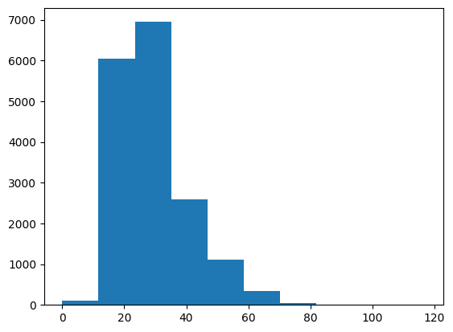
shoot_df['wound'].unique()<ArrowStringArray>
[ 'Head', 'Leg', 'Multiple', 'Foot',
'Back', 'shoulder', 'Ankle', 'Abdomen',
'Shoulder', 'head', 'Chest', 'Stomach',
'Hand', 'Multiple/Head', 'Hip', 'Neck',
'Arm', 'Buttocks', 'Groin', 'Unknown',
nan, 'THIGH', 'Wrist', 'leg',
'arm', 'hip', 'hand', 'LEG',
'back', 'neck', 'MULTI', 'NECK',
'MULTIPLE/HEAD', 'chest', 'foot', 'buttocks',
'SHOULDER', 'BACK', 'STOMACH', 'FOOT',
'MULTIPLE', 'KNNES', 'ARM', 'Pelvis',
'HEAD', 'ankle', 'ABDOMEN', 'ANKLE',
'CHEST', 'pelvis', 'groin', 'stomach',
'abdomen', 'Multiple/HEAD', 'HAND', 'LEGS',
'BUTTOCKS', 'multi', 'TORSO']
Length: 59, dtype: strshoot_df[shoot_df['fatal']==1].groupby(['dist','wound']).size()dist wound
1.0 Back 1
Chest 12
Head 7
Multiple 18
Multiple/Head 4
..
39.0 Neck 3
Shoulder 2
Stomach 5
head 2
77.0 Multiple 1
Length: 244, dtype: int64shoot_df['code'].value_counts()code
400.0 11466
100.0 4299
300.0 811
3400.0 318
3000.0 123
3100.0 85
1500.0 76
2700.0 37
3300.0 28
800.0 17
3700.0 12
2600.0 11
500.0 7
600.0 7
1400.0 6
1800.0 5
1300.0 4
2800.0 4
700.0 3
1100.0 2
2000.0 2
1700.0 2
3200.0 2
200.0 1
Name: count, dtype: int64# Looking at the metadata and UCS codes for classifying crimes
print(
'''
0000: Additional Victim
0100 – 0119: Homicide
0200 – 0299: Rape
0300 – 0399: Robbery
0400 – 0499: Aggravated Assault
3000 – 3900: Hospital Cases
''')
# could create a mapping to go from number to label
0000: Additional Victim
0100 – 0119: Homicide
0200 – 0299: Rape
0300 – 0399: Robbery
0400 – 0499: Aggravated Assault
3000 – 3900: Hospital Cases
def code2type(code):
if code<120:
incident='Homicide'
elif code<300:
incident='Rape'
elif code<400:
incident='Robbery'
elif code<500:
incident='Aggravated Assault'
elif code>=3000 and code<4000:
incident='Hospital Cases'
else:
incident=None
return incidentshoot_df['code'].map(code2type)0 Homicide
1 Homicide
2 Homicide
3 Homicide
4 Aggravated Assault
...
17511 NaN
17512 NaN
17513 NaN
17514 NaN
17515 NaN
Name: code, Length: 17516, dtype: strshoot_df['code_long'] = shoot_df['code'].map(code2type)shoot_df['fatal_long']=shoot_df['fatal'].map({0: 'NON-FATAL', 1: 'FATAL'})
shoot_df['outside_long']=shoot_df['outside'].map({0: 'INSIDE', 1: 'OUTSIDE'})shoot_df['date_YM']=shoot_df['date_'].str[:7]shoot_df.groupby('date_YM').size().plot(figsize=(16,4))
plt.show()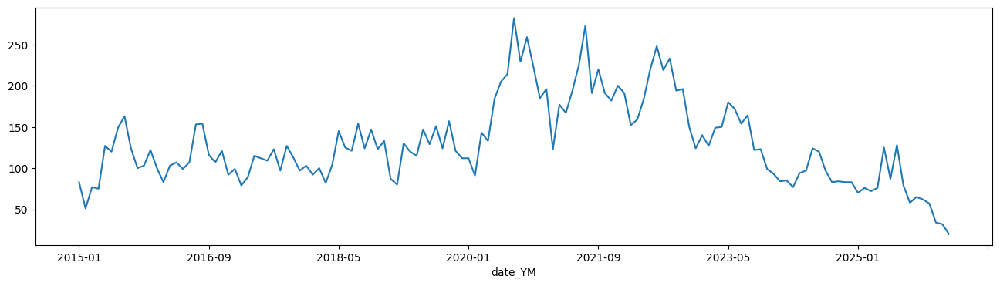
shoot_YM_race = shoot_df.groupby(['date_YM','race_long']).size().unstack().fillna(0)
shoot_YM_race.plot(kind='line',figsize=(16,4), stacked=False)
plt.show()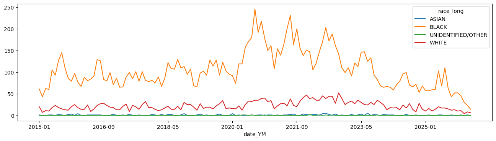
shoot_df.groupby('date_YM').size().plot(figsize=(16,4), kind='bar')
plt.show()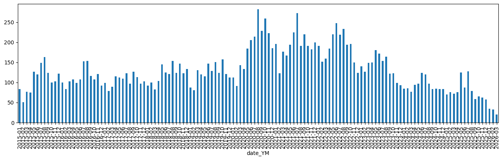
shoot_YM_fatal=shoot_df.groupby(['date_YM','fatal_long']).size().unstack()
shoot_YM_fatal.plot(figsize=(16,4), kind='bar', stacked=True)
plt.show()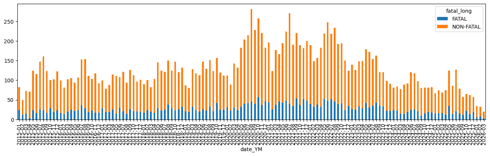
Looking at Polic Districts
shoot_by_dist=shoot_df['dist'].value_counts()ppd_dist_gdf = gpd.read_file('data/Boundaries_District.geojson')ppd_dist_gdf.head()| OBJECTID | AREA | PERIMETER | DISTRICT_ | DISTRICT_ID | DIST_NUM | SUM_AREA | DIST_NUMC | LOCATION | PHONE | DIV_CODE | AREA_SQMI | Shape__Area | Shape__Length | geometry | |
|---|---|---|---|---|---|---|---|---|---|---|---|---|---|---|---|
| 0 | 343 | None | 69282.588463 | 16 | None | 16 | None | 16 | 39th St. & Lancaster Ave. | 686-3160 | SWPD | 1.216700e+08 | 1.927226e+07 | 27575.079183 | POLYGON ((-75.19957 40.00912, -75.19799 40.008... |
| 1 | 344 | None | 33150.154961 | 17 | None | 17 | None | 17 | 20th St. & Federal St. | 686-3170 | SPD | 5.786368e+07 | 9.154950e+06 | 13179.953350 | POLYGON ((-75.16599 39.94184, -75.16621 39.940... |
| 2 | 345 | None | 54403.930038 | 18 | None | 18 | None | 18 | 55th St. & Pine St. | 686-3180 | SWPD | 9.881929e+07 | 1.564117e+07 | 21629.610687 | POLYGON ((-75.18466 39.94851, -75.18633 39.947... |
| 3 | 346 | None | 51597.051603 | 35 | None | 35 | None | 35 | N. Broad St. & Champlost St. | 686-3350 | NWPD | 1.544309e+08 | 2.450685e+07 | 20554.869138 | POLYGON ((-75.13011 40.05789, -75.12898 40.057... |
| 4 | 347 | None | 58075.014444 | 39 | None | 39 | None | 39 | 22nd St. & Hunting Park Ave. | 686-3390 | NWPD | 1.578976e+08 | 2.503787e+07 | 23123.580262 | POLYGON ((-75.17892 40.03175, -75.17782 40.031... |
ppd_dist_gdf['centX']=ppd_dist_gdf.centroid.x
ppd_dist_gdf['centY']=ppd_dist_gdf.centroid.yppd_dist_gdf.plot(color='white', edgecolor='gray', figsize=(10,10))
ppd_dist_gdf.apply(lambda r: plt.text(r['centX'], r['centY'], r['DIST_NUM']),axis=1)
plt.show()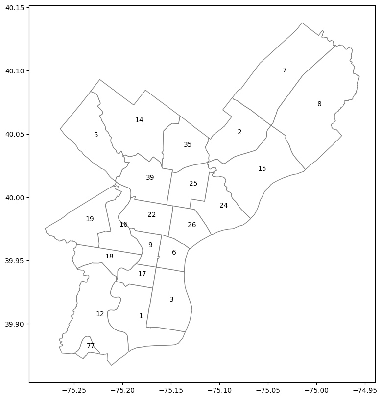
ppd_dist_counts_gdf = ppd_dist_gdf.merge(shoot_by_dist, left_on='DIST_NUM', right_index=True) ppd_dist_counts_gdf| OBJECTID | AREA | PERIMETER | DISTRICT_ | DISTRICT_ID | DIST_NUM | SUM_AREA | DIST_NUMC | LOCATION | PHONE | DIV_CODE | AREA_SQMI | Shape__Area | Shape__Length | geometry | centX | centY | count | |
|---|---|---|---|---|---|---|---|---|---|---|---|---|---|---|---|---|---|---|
| 0 | 343 | None | 69282.588463 | 16 | None | 16 | None | 16 | 39th St. & Lancaster Ave. | 686-3160 | SWPD | 1.216700e+08 | 1.927226e+07 | 27575.079183 | POLYGON ((-75.19957 40.00912, -75.19799 40.008... | -75.203673 | 39.976873 | 823 |
| 1 | 344 | None | 33150.154961 | 17 | None | 17 | None | 17 | 20th St. & Federal St. | 686-3170 | SPD | 5.786368e+07 | 9.154950e+06 | 13179.953350 | POLYGON ((-75.16599 39.94184, -75.16621 39.940... | -75.184559 | 39.937661 | 464 |
| 2 | 345 | None | 54403.930038 | 18 | None | 18 | None | 18 | 55th St. & Pine St. | 686-3180 | SWPD | 9.881929e+07 | 1.564117e+07 | 21629.610687 | POLYGON ((-75.18466 39.94851, -75.18633 39.947... | -75.218378 | 39.951612 | 841 |
| 3 | 346 | None | 51597.051603 | 35 | None | 35 | None | 35 | N. Broad St. & Champlost St. | 686-3350 | NWPD | 1.544309e+08 | 2.450685e+07 | 20554.869138 | POLYGON ((-75.13011 40.05789, -75.12898 40.057... | -75.137001 | 40.039976 | 1381 |
| 4 | 347 | None | 58075.014444 | 39 | None | 39 | None | 39 | 22nd St. & Hunting Park Ave. | 686-3390 | NWPD | 1.578976e+08 | 2.503787e+07 | 23123.580262 | POLYGON ((-75.17892 40.03175, -75.17782 40.031... | -75.175823 | 40.013999 | 1314 |
| 5 | 348 | None | 81903.641825 | 1 | None | 1 | None | 01 | 24th St. & Wolf St. | 686-3010 | SPD | 2.163501e+08 | 3.419657e+07 | 32552.488256 | POLYGON ((-75.19724 39.92944, -75.19693 39.929... | -75.183562 | 39.904282 | 253 |
| 6 | 349 | None | 63587.369399 | 2 | None | 2 | None | 02 | 7306 Castor Ave | 686-3020 | NEPD | 1.923461e+08 | 3.053264e+07 | 25329.930167 | POLYGON ((-75.05444 40.04454, -75.05482 40.044... | -75.081508 | 40.050009 | 458 |
| 7 | 350 | None | 55305.496227 | 3 | None | 3 | None | 03 | 11th St. & Wharton St. | 686-3030 | SPD | 1.839049e+08 | 2.907948e+07 | 22002.676793 | POLYGON ((-75.13205 39.89932, -75.1347 39.8946... | -75.151662 | 39.917482 | 338 |
| 8 | 351 | None | 71654.674103 | 19 | None | 19 | None | 19 | 61st St. & Thompson St. | 686-3190 | SWPD | 1.782215e+08 | 2.823350e+07 | 28509.269384 | POLYGON ((-75.20941 40.00882, -75.20888 40.008... | -75.238351 | 39.981095 | 1225 |
| 9 | 352 | None | 45820.883658 | 22 | None | 22 | None | 22 | 17th St & Montgomery Ave. | 686-3220 | CPD | 1.201916e+08 | 1.904228e+07 | 18230.658403 | POLYGON ((-75.18686 40.00043, -75.18696 40.000... | -75.174447 | 39.984378 | 1991 |
| 10 | 353 | None | 59488.443799 | 24 | None | 24 | None | 24 | 3700 Whittaker Ave. | 686-3240 | EPD | 1.534204e+08 | 2.431219e+07 | 23682.030220 | POLYGON ((-75.1062 40.01636, -75.10587 40.0162... | -75.100413 | 39.991923 | 1716 |
| 11 | 354 | None | 49749.035020 | 25 | None | 25 | None | 25 | 3700 Whittaker Ave | 686-3250 | EPD | 1.179874e+08 | 1.870673e+07 | 19809.830073 | POLYGON ((-75.11274 40.02628, -75.1127 40.0261... | -75.131465 | 40.009320 | 2111 |
| 12 | 355 | None | 38852.216201 | 26 | None | 26 | None | 26 | E. Girard Ave. & Montgomery Ave. | 686-3260 | EPD | 9.722328e+07 | 1.539976e+07 | 15462.189563 | POLYGON ((-75.1283 39.96072, -75.13071 39.9591... | -75.132996 | 39.976442 | 579 |
| 13 | 356 | None | 90263.224984 | 15 | None | 15 | None | 15 | Harbison Ave. & Levick St. | 686-3150 | NEPD | 3.077864e+08 | 4.881580e+07 | 35944.018281 | POLYGON ((-75.02177 40.03126, -75.01137 40.021... | -75.060662 | 40.020995 | 1284 |
| 14 | 357 | None | 21988.924284 | 77 | None | 77 | None | 77 | 8800 Essington Ave. | 937-6816 | SWPD | 2.210912e+07 | 3.492188e+06 | 8738.613995 | POLYGON ((-75.2338 39.88978, -75.2338 39.88977... | -75.237139 | 39.880787 | 3 |
| 15 | 358 | None | 71919.797243 | 5 | None | 5 | None | 05 | Ridge Ave. & Cinnaminson St. | 686-3050 | NWPD | 2.130442e+08 | 3.381557e+07 | 28662.589764 | POLYGON ((-75.2043 40.03468, -75.20403 40.0346... | -75.229553 | 40.047595 | 40 |
| 16 | 359 | None | 34655.320856 | 6 | None | 6 | None | 06 | 11th St. & Winter St. | 686-3060 | CPD | 6.927927e+07 | 1.096654e+07 | 13788.505692 | POLYGON ((-75.13437 39.95294, -75.13524 39.950... | -75.149072 | 39.954649 | 189 |
| 17 | 360 | None | 90379.409963 | 7 | None | 7 | None | 07 | Bustleton Ave. & Bowler St | 686-3070 | NEPD | 3.460930e+08 | 5.501671e+07 | 36037.229512 | POLYGON ((-74.99854 40.12821, -74.99789 40.127... | -75.035176 | 40.098711 | 49 |
| 18 | 361 | None | 102386.230348 | 8 | None | 8 | None | 08 | Academy Rd. & Red Lion Rd. | 686-3080 | NEPD | 4.742013e+08 | 7.532290e+07 | 40817.729791 | POLYGON ((-74.97567 40.12021, -74.97557 40.120... | -74.999219 | 40.072206 | 118 |
| 19 | 362 | None | 38272.901992 | 9 | None | 9 | None | 09 | 21st St. & Pennsylvania Ave. | 686-3090 | CPD | 5.840910e+07 | 9.247450e+06 | 15228.182451 | POLYGON ((-75.16366 39.95339, -75.16333 39.953... | -75.173806 | 39.960561 | 149 |
| 20 | 363 | None | 109036.337130 | 12 | None | 12 | None | 12 | 65th St. & Woodland Ave. | 686-3120 | SWPD | 3.114690e+08 | 4.923350e+07 | 43355.190539 | POLYGON ((-75.22089 39.94785, -75.2204 39.9474... | -75.227720 | 39.905890 | 1269 |
| 21 | 364 | None | 93080.641065 | 14 | None | 14 | None | 14 | Haines St. & Germantown Ave. | 686-3140 | NWPD | 3.240713e+08 | 5.145609e+07 | 37097.945908 | POLYGON ((-75.19084 40.07413, -75.18968 40.073... | -75.187237 | 40.059059 | 919 |
ppd_dist_counts_gdf.plot(edgecolor='gray', column='count', figsize=(10,10),
legend=True, cmap='Oranges')
ppd_dist_counts_gdf.apply(lambda r: plt.text(r['centX'], r['centY'], r['DIST_NUM']),axis=1)
plt.show()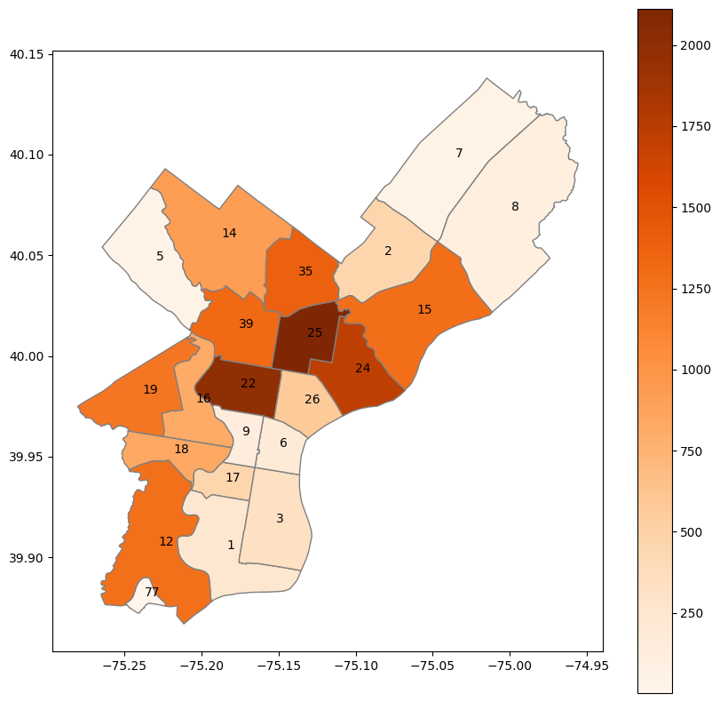